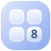

Du kannst weiterspielen oder ein neues Spiel starten.
Mehr Deckkraft erhöht den Kontrast.
Schiebe alle Kacheln in eine Richtung. Treffen zwei gleiche Zahlen aufeinander, werden sie eins.
Nach jedem Zug erscheint eine neue 2 oder 4. Erreiche die 2048 und spiele darüber hinaus. Sind alle Felder belegt und keine Verbindung mehr möglich, ist die Runde vorbei.
Spielstand und Bestwert werden lokal in diesem Browser gespeichert.
Nach dem Spiel von Gabriele Cirulli.
Dein aktuelles Spiel wird zurückgesetzt. Dein Bestwert bleibt erhalten.